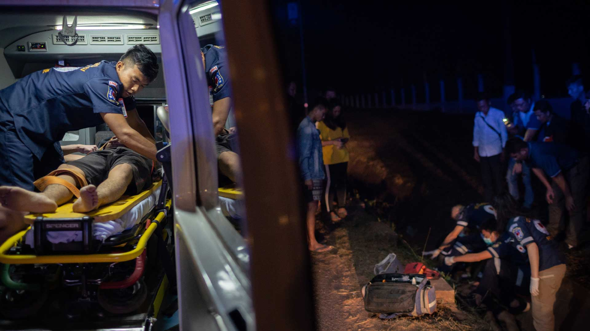
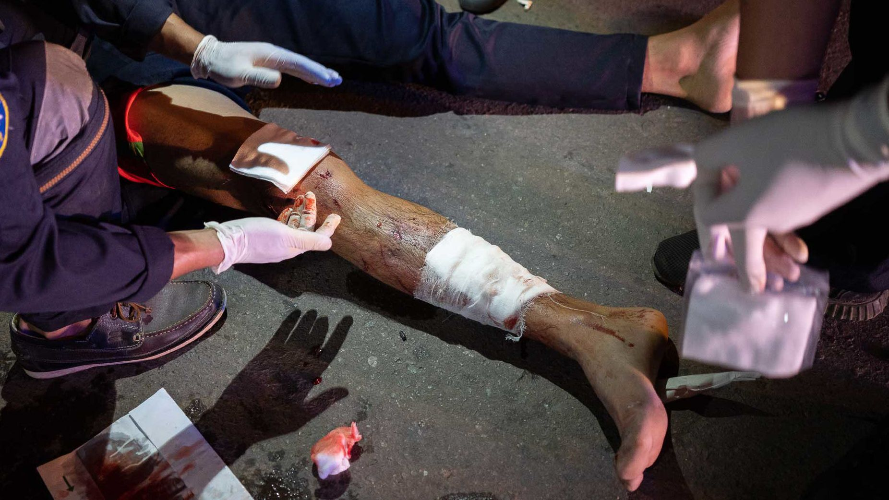
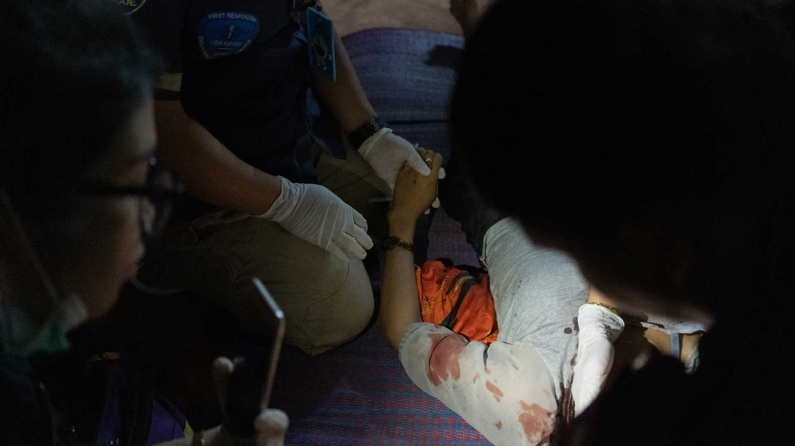
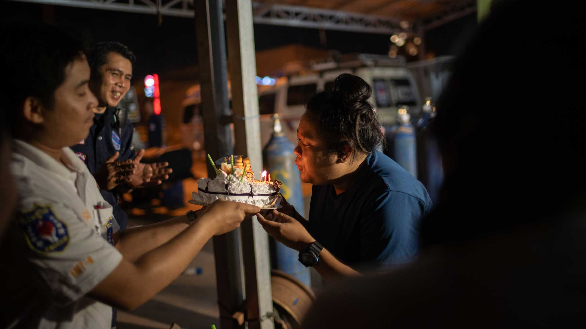
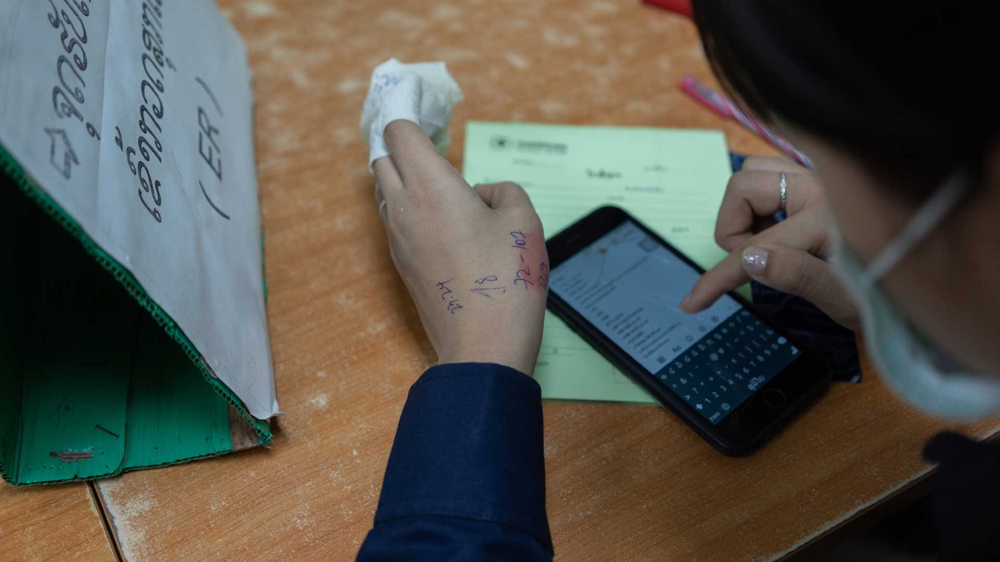

UNDER THE GLARE of bright, white headlights and flashing, purple-blue neon lights, emergency responders are attending to two youth, who crashed their motorbikes into a ditch. It is the first emergency call of the evening and the start of a typical night in the Laotian capital, Vientiane.
HOPE AND HEARTBREAK
ON THE ROAD
Volunteer-run ambulance service Vientiane Rescue is saving thousands of lives in the Laotian capital.
Chapter 1
DRUNK, DRIVING & DANGEROUS

French paramedic and former firefighter Sébastien Perret is at the scene. He co-founded Vientiane Rescue in 2010 with seven local volunteers, mostly teenagers. Before Vientiane Rescue, Sébastien says that victims of serious accidents would often be left to die. It remains the country’s only free, emergency responder service. With the rising affluence in Laos, traffic has increased, resulting in more accidents.
"I think the first 18 months of work everything we did was just transporting bodies without any positive outcome." - Sébastien

According to the World Health Organization, about 90 per cent of crashes are due to drink-driving and speeding.
Across town, neon lights of a different kind illuminate a dance club. Venues like this draw boisterous crowds of youthful Laotians looking for a good night out, lubricated with copious amounts of alcohol.
Outside the club, an intoxicated, young man recovers on a sofa. Official sources state that underage drinking in Laos is common in restaurants and bars. Barriers to access are minimal with alcohol being affordable and easily available. In a move to promote health and safety among its residents, Vientiane’s Mayor has banned the sale of alcohol and alcoholic beverages before 4pm in the capital
The ban might prevent people from drinking earlier, but it is unlikely to affect alcohol sales, as revellers usually consume alcohol after work. Before the night is up, F&B outlets are littered with empty bottles.
Motorcycles are the most popular form of transport in Vientiane. Many motorists are underaged or do not have a proper driving licence. They also tend to drive under the influence of alcohol, hence drunk driving is the leading cause of road fatalities in Laos.


According to the World Health Organization, Laos is the third biggest consumer of alcohol in Southeast Asia, with 7.5 litres consumed per person per year.
Vientiane Rescue’s ambulances are dispatched 24/7 from four stations located near ‘hot spots’ across the city. Braving crowded road conditions, volunteer drivers weave in and out of busy traffic to get to a crash site within three to seven minutes. On a busy night, Vientiane Rescue’s trained first-aid and emergency medical services volunteers respond to an average of 20 calls.
Accidents usually involve motorcyclists, and since helmets are seldom worn, the risk of getting seriously hurt is greater. Volunteers attend to varying severities of injuries; from minor cuts and scrapes to broken limbs and horrific accidents that end in death - as many as 50 fatalities a month.
"It’s a huge reward that people trust us enough to ask us for help in any kind of emergency situation." - Sébastien
Vientiane Rescue has touched the lives of people from all walks of life. Through the years, volunteers have earned the trust and respect of the community. The free emergency service is often the first and only place people turn to in a calamity. Besides road accidents, Vientiane Rescue’s teams also fight fires and deliver babies. This evening, volunteers respond to a domestic violence case, which would involve the local police.



Chapter 2
THE VOLUNTEERS
EVEN THOUGH road accidents are common in Vientiane, crash scenes still attract the morbid curiosity of bystanders. But for some, doing nothing was no longer enough. Instead, they were moved to take action, and signed up as volunteers with Vientiane Rescue.

A desire to “help others”, “save lives”, “make their city a safer place” and “to become better humans”. These are the common reasons why volunteers dedicate their time to Vientiane Rescue. While there is a core team of about 60 full-timers, most of the over 500 unpaid volunteers are students or juggle day jobs.
Where are the pioneering volunteers now?
Sébastien Perret with the original team of Vientiane Rescue founders. (Photo courtesy of Vientiane Rescue)
The original group of founding members, who were teenagers when they started Vientiane Rescue in 2010, continue to work with the rescue teams. Now in their early- to mid-20s they have taken on more administrative roles, including that of station deputy chief. Despite running the day-to-day operations at the stations, they regularly head out on emergency interventions with volunteers.
"Being a good manager isn't sitting behind a desk; it's being with the team inside the ambulances. So, each of us continues to work on the roads." - Sébastien
Their loyalty to Vientiane Rescue all these years is due to their steadfast belief in the importance of the service they provide. Plus, “they also like it,” says Sébastien. “And you can’t get respect if you don't show your commitment.”
What does Vientiane Rescue look for in a volunteer?
Professionalism, courage, solidarity, compassion, altruism, commitment and sacrifice. Uniforms are only given to volunteer trainees who show up regularly for at least three months.
Meet some of the volunteers

KIK, 25
A cashier at a local bank during the day, dedicated volunteers like Kik, who display leadership skills, are what make Vientiane Rescue so special.
Trained as an emergency medical technician (EMT), she is in charge of advising and briefing newcomers and teaching them first aid. The most regular advice she gives her volunteers is “to put their heart” in what they do. And reminds them that it is “not a game”, because they have people’s lives in their hands.

JOHNSON, 26
A commercial pilot with Lao Skyway, Johnson is no stranger to high-stress situations. He signed up to volunteer with Vientiane Rescue after witnessing one too many accidents. He says that the law prevents people without the necessary qualifications to assist accident victims. This motivated him to get proper training. He is a qualified EMT and a diving instructor.
Fearing for his safety, his parents were initially against him volunteering. But after hearing his stories of rescue and bravado, are ardent supporters now. His dad even tunes in to the transmitter radio to monitor the accidents his son attends to on his shifts.
The greatest reward from saving lives is when victims recover and return to the stations to say, ‘Thank you.’ Johnson compares the feeling of achievement to landing a plane.

AI, 41
This father-of-three works as a full-time engineer at an international hotel chain, managing its fire safety and gas system. But several times a week, Ai swaps his work attire for a different uniform after he clocks out.
He has volunteered with Vientiane Rescue for three-and-a-half years. The decision to join the team was precipitated by a loss in the family. His sister-in-law died in an accident seven years ago, because no one rescued her in time.

Ai has become an indispensable addition to the team. The number of badges on Ai's uniform is testament to his achievements over the years. He now manages the diving, fire and rope rescue teams. An interest in first aid and rescue was nurtured since Ai was a young boy, and he continues to develop these skills by training regularly.
On the behalf of Vientiane Rescue, he also conducts training sessions with local firefighters. Ton, his eldest son, often assists him in preparing the presentation slides for these classes.

TON, 15
So inspired by his father's passion for saving lives, Ton asked to join Vientiane Rescue at 11 years old. He now volunteers two to three times a week, sometimes without his dad. In order to continue with Vientiane Rescue, Ton has proven to his parents that he can juggle school work and volunteering. His dedication is clear, becoming one of the youngest volunteers to complete EMT training.

Father and son have dinner with the rest of the family, before heading out for their shift at Dong Dok station. Ai says he is proud to see his son mature over the years, and believes that first aid rescue has taught him the importance of responsible driving.

All's quiet for now at Dong Dok station, where Kik, Johnson, Ai and Ton volunteer.

Dong Dok is the largest of four stations run by Vientiane Rescue in the capital. They also have one station in the southern city of Pakse, and two in the northern part of the country in Vang Vieng and Xiengkhuang. Across all seven stations, it has 20 ambulances and two fire trucks.

Ai and Ton check the pressure of the station's supply of oxygen tanks to make sure they function properly. When the dam collapsed in southeast Laos in 2018, Ai took leave from his job to represent Vientiane Rescue during the search and rescue operation. He says there were moments he feared for the lives of his team of volunteers, as they had to search for survivors in the river at near zero visibility.
There was also the lurking threat of unexploded ordnance (UXO) spread across the area by the floods. But Ai understood that risking their lives was integral to what they signed up for as first responders.

Johnson joins Ai and Ton at Dong Dok station, and starts his shift on a celebratory note. He surprises call centre manager Mimi with a birthday cake. The fun ends abruptly when the phones start ringing. Mimi dashes off to handle the calls, leaving her cake uncut.

MIMI, 26
Behind a line of telephones is where Mimi is in her element, as she straddles the emergency calls and dispatches the ambulances from the station nearest the accident site. The call centre receives some 500 calls a month. Even as a paid full-timer, Mimi continues to volunteer her spare hours to respond to accidents. One of the things she enjoys most is to deliver babies. Mimi has dedicated the past six years of her life to Vientiane Rescue and acts as a big sister to the other residents at Dong Dok.
She says before Vientiane Rescue, she used to stay out late and party a lot. Since then, she has become more serious and likes herself better. Although she lives at Dong Dok permanently, she returns to her family home regularly. Her dream is to work at Vientiane Rescue indefinitely. The best part of her job? Interacting with people from different backgrounds.

Chapter 3
ON THE FRONTLINE
JOHNSON IS SENT OUT on his first emergency of the night. He replaces the cake in his hand with the radio receiver in the ambulance, which receives updates from Mimi.

At the wheel, Ai skilfully manoeuvres through rush-hour traffic. It can be risky and harrowing when other drivers break the law, by speeding or skipping red lights.
Thankfully, the accident isn’t serious, and the team transfers the shaken victim, a motorcyclist, into the ambulance. As Ai drives to the nearest hospital, his son, Ton, chats and watches over the patient.

At Dong Dok station, Kik has just arrived for her shift. Since joining the Vientiane Rescue team, Kik says she has matured and is better at adapting to new situations..

Kik’s quiet night ends soon enough when an emergency call comes in. She hops into the ambulance with her team and preps them from the front seat.

A self-confessed risk-taker, Kik is in her element in the thick of the action. Her steely focus is nothing short of admirable.

She directs her team to move the drunken victim onto a stretcher after wrapping his neck in a brace. The young man is transferred to the ambulance, where he is kept stable and comfortable.
Administrative processes ensure accident victims are given the best medical care they need. This volunteer relies on the notes she has written in her phone and on her hand to complete an accurate report at the hospital.

"We are working on an application to collect data on the road and to send it about 10 minutes before we bring the patient to the hospital. It's going to be a very big step forward for the treatment of patients." - Sébastien
After dropping off an accident survivor at the A&E, Sébastien chats with volunteers. Having lived in the country for nearly a decade, he speaks Lao and has developed a camaraderie with them. Over time, Sébastien and his teams have also gained the trust and respect of hospital staff. This has improved the survival rate of accident victims, and raised volunteers' morale.

To date, Vientiane Rescue has saved more than 60,000 people - from just 300 in 2010 to over 15,000 in 2019.
Chapter 4
WINDING DOWN
AFTER ANOTHER HECTIC NIGHT, Sébastien takes volunteers out for supper at a popular noodle stall. He worries about their future, particularly for those who volunteer full-time. The plan is to find more avenues of funding, so he can pay full-timers a living wage. So far, Vientiane Rescue has been supported by private donations, and operates on a tight budget of US$5,000 a month.
"Behind the question of volunteerism, there's a question of equity, as well. These people save lives and risk their own lives, and get nothing." - Sébastien

Volunteers return from their rescue missions, and catch up over a home-cooked dinner. There is plenty of laughter, showing a deep bond between them, strengthened by the amount of time they spend together. Their friendships help to soften the often bloody scenes they see every day. Sébastien says that when the people they save and their families donate items to the stations to show their gratitude, it raises the spirits of volunteers and gives them the impetus to continue to save lives. Many cannot imagine leaving their Vientiane Rescue family.
"People that stop by our station giving us food, this is something that is really touching us, because it's real generosity." - Sébastien
Some of these friendships have blossomed into romances. Before heading to bed, Kik video calls her fiancé , who is also a volunteer with Vientiane Rescue. He was part of the 2018 cave rescue team in Chiang Rai, Thailand. Kik says he coached and advised her when she first joined. Through their shared experiences and interest in helping people, they grew closer and fell in love.
Vientiane Rescue volunteers each have their own private space in the dorms at each station. But those still on shift try to take a power nap during lull periods. This keeps them alert after a long day and ready to tackle any emergency in the dead of the night.


A new day rolls in at Dong Dok station, and it is Mimi’s turn to surprise another volunteer with a birthday cake. Within the huddle of this special moment, the future of the Vientiane Rescue family looks bright. Sébastien believes that the service will live on as long as volunteers continue to take pride in and ownership of Vientiane Rescue.

CONTRIBUTORS
Thomas
Cristofoletti
Photography &
Video
Tsen-Waye
Tay
Producer &
Writer
Stéphane-Thavideth
Sivilay
Fixer
Chris
Annadorai
Executive
Producer